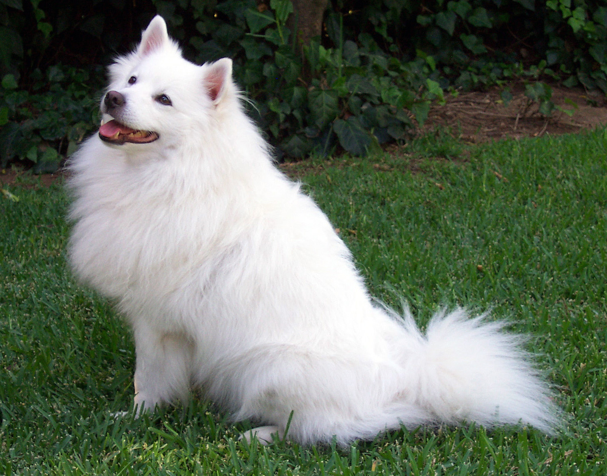

输入图片 · dog.jpg224 × 224 RGB

预处理：Resize → CenterCrop → NormalizeLabradorTop-1 预测
82.4%置信度
9.6 ms相对单图延迟
Image classification · live workbench
选择模型、输入尺寸和置信度阈值，观察 MobileNetV3 在端侧分类中如何平衡准确率、延迟与输出稳定性。

预处理：Resize → CenterCrop → NormalizeHow it stays small
点击任一模块，查看它在 MobileNetV3 的计算预算和表示能力之间承担的工作。
02 · DEPTHWISE
每个通道各自做 3×3 空间卷积，避免普通卷积同时在空间和通道维度上展开的高成本计算。
Deployment choices
这些 ImageNet 指标来自仓库教程，用于建立容量和精度的相对尺度；部署前仍须在目标设备与数据上复测。
流程验证、极低延迟或小数据迁移：先用 Small 验证输入、标签和预处理，再评估容量是否真是瓶颈。